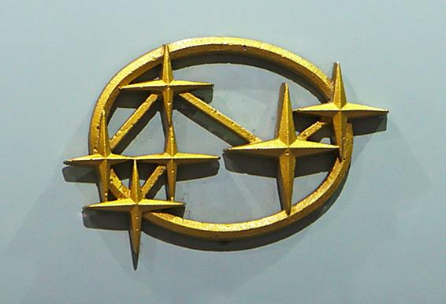

Random interesting astro trivia: Questions
- X is a Japanese company established in the 1950s that derives its name from an astronomical body. The former logo of this company is shown below.
Identify X and tell how X is related to astronomy.

- Known to be the most energetic and luminous electromagnetic events since the Big Bang, this astronomical phenomenon was discovered in 1967
by X mission by the United States to detect covert nuclear weapons tests. The United States suspected that the Soviet Union might attempt
to conduct secret nuclear tests after signing the Nuclear Test Ban Treaty in 1963. On July 2, 1967, a flash of high energy radiation, unlike
any known nuclear weapons signature, was detected by the X mission, further studies revealing the cosmic nature of the radiation.
Identify the astronomical phenomenon and X mission.
- The following recording is a part of a video clip made by Alex Parker and Melissa Graham, originally titled as “ _____ Sonata: Music of the
Exploding Spheres”. They compiled the music in this video by giving notes to 241 Xs observed by the Canada-France-Hawaii Telescope (CFHT)
in four deep fields of the sky over a period of three years.
Audio
Note assigned to each X was determined in the following way:
Volume = Distance. The volume of the note is determined by the distance to the X, with the more distant X being quieter.
Pitch = Stretch. The pitch of the note was determined by the stretch, a property of how the X brightens and fades.
Higher stretch values correspond to higher notes and vice versa.
Instrument = Mass of the host galaxy. The instrument the note was played on was determined by the properties of the galaxy which hosted each X.
Those hosted by massive galaxies are played with a stand-up bass, while those hosted by less massive galaxies are played with a grand piano.
Identify X and fill in the blank.
- X, associated with a very famous rock band, released a Single in 2019, inspired by our furthest flyby in history to date. The spacecraft’s
historic New Year’s 2019 flyby targeted a Kuiper Belt object Y, situated at four billion miles from Earth.
Stereoscopy is a technique for creating or enhancing the illusion of depth in an image. Most stereoscopic methods present a pair of
two-dimensional images to the viewer, in which the left image is presented to the left eye and the right image is presented to the right eye.
When viewed, the human brain perceives the images as a single 3D view, giving the viewer the perception of 3D depth. X is also credited for
stereo-compiling the following image of the main target released by the same mission, in 2015. Identify X and Y.
- The International Civil Aviation Organization (ICAO) is a specialized agency of the United Nations that coordinates the principles and techniques of
international air navigation, and fosters the planning and development of international air transport to ensure safe and orderly growth. It uses a
four-letter code designating aerodromes around the world called ICAO airport codes or location indicator codes, primarily for air traffic control, but also
sometimes to identify other aviation facilities such as weather stations, international flight service stations or area control centers. These codes are
different from the three letter codes (eg BOM or IXC) that passengers see on the airline tags in that far more aerodromes (:location from which aircraft flight
operations take place, regardless of whether they involve air cargo, passengers, or neither, and regardless of whether it is for public or private use) than
just airports have ICAO codes than the three letter more airport codes. This inclusiveness of the IATA codes has resulted in some interesting codes. One such
code for a place referred to as 'Area J' is JZRO. What location could this code refer to?
- Robert Williams is an astronomer who served as the Director of the Space Telescope Science Institute (STScI) from 1993 to 1998 and the President of the
International Astronomical Union (IAU) from 2009 to 2012. In the initial days of the ___ telescope, he wanted it to point at a seemingly empty patch of sky for
100 hours. He was denied of this and was also criticized for this unobvious choice of the target and wasting valuable observation time of the telescope. In 1995, as the Director of STScI, he decided to
invest a substantial fraction of his Director's Discretionary time on the telescope to the study this patch, challenging that if nothing of science value was observed in this observation then he would
resign from his position.
This historic project resulted in a landmark image showing in remarkable detail the structure of galaxies in the early universe and he was awarded the 1998
Beatrice M. Tinsley Prize, the 1999 NASA Distinguished Public Service Medal, and the 2016 Karl Schwarzschild Medal for leading this project. What is the outcome
of this project more commonly known as?
- In 1990, Mike Van Hilst, at the Smithsonian Astrophysical Observatory, Harvard University, developed an application "M". Originally written in X10, it was
quickly rewritten in X11, and was one of the first X11 applications made publicly available.
In the mid 1990's, with the administrative support of Steve Murray, Eric Mandel developed "M"TNG, (or "M", The Next Generation), named after the ____.
TNG explored new GUI interfaces and supported a new external analysis interface. In particular, it utilized XPA, (X11 Public Access, also written by Eric)
which allowed TNG to be scripted via a shell, or from other applications.
In 1998, while working with Eric, William Joye began a complete rewrite of TNG, based on the experience developed while supporting TNG. The new project
was referred to, for the lack of a better name, as "N", the logical extension of the _____. The name continues to be in use till date!
Fill in the blank and identify the software "M N" (or more commonly known as just "N") beloved by astronomers around the world.
- The following google doodle features an Indian professor and scientist UR Rao, also known as the The Satellite Man of India, on his 89th birth anniversary.
Over 18 Indian satellites were designed, fabricated and launched under his guidance. As a former director of ISRO, he is credited for the initial development
of ASLV, PSLV, GSLV and cryogenic systems. He was the first Indian Space Scientist to be allowed into the prestigious “Space and Satellite Hall of Fame” at
Washington DC, USA.
He is famously known for X in development and launch of which his role was of immense importance. Built by ISRO, X was a part of the Interkosmos
program which provided access to space for friendly states.
Identify X and name the site X was launched from.
- Who are we talking about?
"The reports of my singing are greatly exaggerated.
I only hummed 'Happy Birthday' to myself once, back in 2013."
Audio
- The Nobel laureates of 1978 were experimenting with a super-sensitive horn antenna at Bell Labs in New Jersey, built to detect radio waves bounced off
Echo balloon satellites, when they first observed this strange signal. To measure the faint radio waves, the duo had to eliminate all recognizable interference
from their receiver. They removed the effects of radar and radio broadcasting, and suppressed interference from the heat in the receiver itself. Yet, when they
reduced their data, they found a low, steady, mysterious noise at the wavelength of 7.35cm, that persisted in their receiver, and was 100 times more intense
than they had expected. They thoroughly checked their equipment, removed some pigeons nesting in the antenna and cleaned out the accumulated droppings, and the
noise still remained. Both concluded that this noise was coming from outside our galaxy, from an unknown source.
The researcher who provided the first theoretical explanation to this signal in the same year received the Nobel Prize in 2019.
Discovery of which important signal are we talking about and who is the 2019 Nobel Laureate associated with it?
- The Space Coast is a region in the U.S. state of Florida around the Kennedy Space Center (KSC) and Cape Canaveral Space Force Station. Most of the area lies within Brevard County.
This area was given a very specific three digit telephone area code in Nov 1, 1999 by the efforts of a local resident Robert Osband to commemorate the Space Coast's impact on the locality.
What could this code be?
Following are questions made by Amitesh, Tahami, Nikunj, and Aratrik, my good friends from IISER Mohali. They made these questions for a quiz competition for The Astronomy Club and I liked the trivia involved
in them, hence adding here!
-
What name given to an autumn full moon appearing in the month of October in the northern hemisphere alludes to the brightness of the night sky that aids the shooting of migratory birds?
-
Several different suggestions were made for names of Jupiter's outer satellites, but none were universally accepted until 1975 when the International Astronomical Union's (IAU) Task Group for Outer
Solar System Nomenclature granted names to satellites V-XIII,[51] and provided for a formal naming process for future satellites still to be discovered. The practice was to name newly discovered moons
of Jupiter after lovers and favorites of the god Jupiter (Zeus) and, since 2004, also after their descendants. All of Jupiter's satellites from XXXIV (Euporie) onward are named after descendants or favourites
of Jupiter. The same mythological naming scheme was also followed roughly for the moons of Saturn and Neptune. However, John Herschel, when handed over the responsibility of naming the moons of Uranus,
instead of assigning names from Greek mythology, named the moons after magical spirits in English literature, and thus Uranian moons became Oberon and Titania. Following the same trend, The current IAU practice
is to name moons after characters from the works of X or Y.
Identify X and Y.
-
Why did the Mars Climate Orbiter fail?
-
In 2002, Karl Glazebrook and Ivan Baldry at John Hopkins university were doing spectral analysis of different galaxies to study star formation. From their survey of the light from over 200,000 galaxies,
they determined that the average color of the universe was a greenish white, but they soon corrected their analysis in a 2003 paper in which they reported that the colour averaged to a slightly
beigeish white. They named the colour “Cosmic X”, where X is also the name of a popular drink of Italian origin. The researchers chose this name out of a lot of options because the literal meaning of
X in Italian had a similarity to the name of one of our very well-known galaxies.
What is X?
-
The Ooty Radio Telescope (ORT), has a cylindrical parabolic reflecting surface, 530m long and 30m wide, placed on a hill whose slope is about 11 degrees in the north-south direction. It can track
celestial object for about 10 hours from their rising in east to their setting in the west by simply rotating the antenna mechanically along its long axis.
The ORT has been designed and fabricated with domestic Indian technological resources. It has produced results on radio galaxies, quasars, supernovae and pulsars.
What is special about the location of the ORT?
-
Cassini-Huygens was a joint NASA/ESA/ASI space research mission which aimed to study Saturn and its system, including its rings and natural satellites. It included NASA's Cassini space probe and
ESA's Huygens lander, which landed on Saturn's largest moon, Titan. Cassini was originally slated to last four years at Saturn but its mission was extended multiple times and it spent nearly 13 years
orbiting Saturn.
The mission finally ended in September , 2017 when the probe was deliberately made to fall into Saturn's atmosphere and burn up in the process.
Why was this decision of crashing it into Saturn taken?